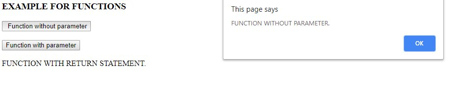
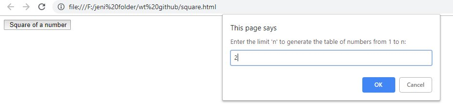
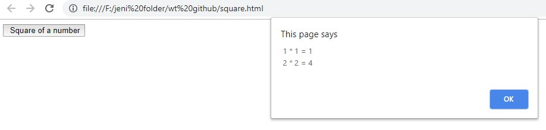

Go back to Home Page
INTRODUCTION TO FUNCTIONS
- Modules in javascript are called functions.
- Prpakaged functions that belong to javascript objects(such as Math.pow and Math.round) are calledmethods
- Functions are programmer-defined functions.
- A function is invoked by a function call.
- Function call specifies the function name and provides information (as arguments) that the called function needs to perform its task.
- All the variables inside the function definitions are local variables-thismeans that they can be accessed only in the function in which they define.
- The parantheses()represents the function-call operator.
FORMAT OF FUNCTIONS:
- A FUNCTION WITHOUT ARGUMENTS.
function function_name()
{
declarations and statements
}
- HOW TO CALL FUNCTION:
function_name()
- A FUNCTION WITHOUT ARGUMENTS.:
function function_name(parameter_list)
{
declarations and statements
}
- HOW TO CALL FUNCTION:
function_name(parameter_list)
- A FUNCTION WITHOUT RETURN TYPE.
function result(a,b)
{
c=a+b
return c
}
- HOW TO CALL FUNCTION:
sum=total(2,3)
EXAMPLES FOR FUNCTIONS
<html>
<head>
<script type="text/javascript">
function myfunction()
{
alert("FUNCTION WITHOUT PARAMETER.")
}
function myfunction1(txt)
{
alert(txt)
}
function myFunction2()
{
return("FUNCTION WITH RETURN STATEMENT.")
}
</script>
</head>
<body>
<h3>EXAMPLE FOR FUNCTIONS</h3>
<form>
<input type="button" onclick="myfunction()" value=" Function without parameter"><!--function call without parameter-->
<input type="button" onclick="myfunction1('FUNCTION WITHOUT PARAMETER.')" value="Function with parameter"><!--function call with parameter-->
document.write(myFunction2())<!--function call with return type-->
</script>
</form>
</body>
</html>
OUTPUT

SQUARE OF THE NUMBER
<html >
<head>
<title> Square.html </title>
<script type="text/javascript">
function square()
{
var n=window.prompt ("Enter the limit 'n' to generate the table of numbers from 1 to n:","");
var n=parseInt(n);
var msg="";
var res= "0";
for(var x= 1; x<=n;x++)
{
res = x * x;
msg = msg + " " + x + " * "+ x + " = " + res + "\n";
}
alert(msg);
}
</script>
</head>
<body >
<input type="button" onclick="square()" value=" Square of a number">
</body>
</html>
OUTPUT


RANDOM NUMBER GENERATION
<html>
<head>
<title>register</title>
<script type="text/javascript">
function random()
{
var ran= Math.floor(Math.random()*1001);
document.getElementById("demo");
document.writeln("<h2>THREE DIGIT RANDOM NUMBER:"+ran+"</h2>");
document.writeln("<b>Reload to get another new random number</b>");
}
</script>
</head>
<body>
<button onclick="random()" >CLICK TO GET THREE DIGIT NUMBER</button><br><br>
</body>
</html>
RECURSION FUNCTION OF FACTORIAL
<html>
<head>
<title> recursion of factorial </title>
<script>
var num=window.prompt("number to find factorial:");
var num=parseInt(num);
function calfact(num)
{
if(num!=1)
{
fact=fact*(num-1);
calfact(num);
}
else
{
return fact;
}
alert(fact);
}
</script>
</head>
<body>
</body>
</html>